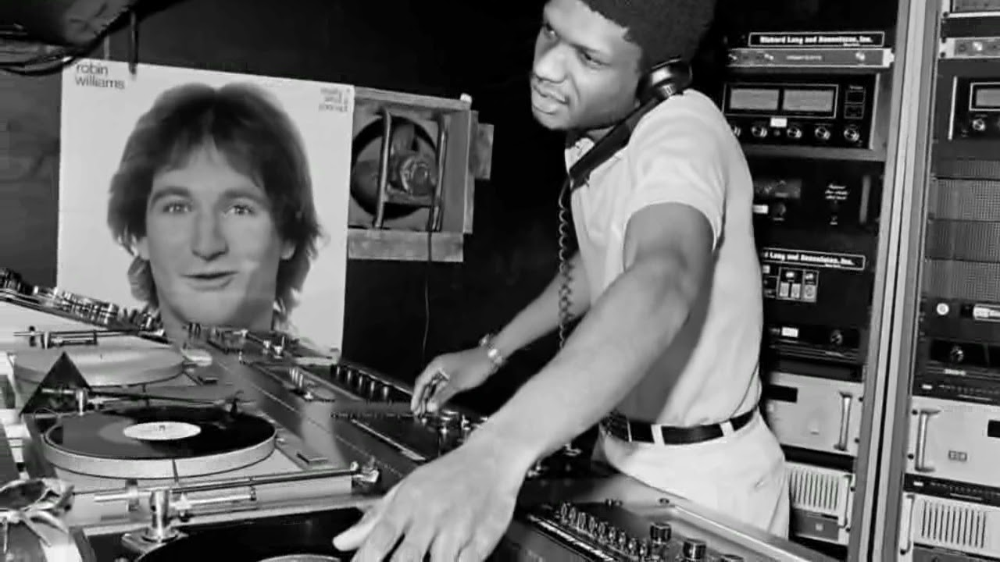
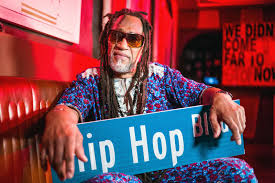
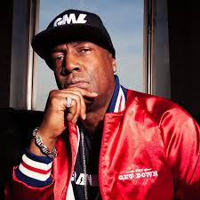
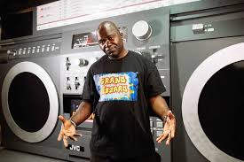
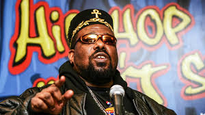

O que é DJing no Hip-Hop?
O DJing é um dos quatro pilares fundamentais da cultura Hip-Hop, junto com o rap (MCing), a dança
(breaking/b-boying) e o grafite. No contexto do Hip-Hop, o DJ não é apenas alguém que toca música, mas sim
um artista que manipula e transforma sons através de técnicas como o scratching,
beatmatching e sampling.

Nascido nas festas de rua do Bronx nos anos 1970, o DJing hip-hop revolucionou a forma como a música é criada
e consumida, transformando toca-discos em instrumentos musicais e criando uma nova linguagem sonora que
influenciaria gerações futuras.

História e Marcos do DJing no Hip-Hop
1973 - O Nascimento
DJ Kool Herc organiza sua primeira festa na Sedgwick Avenue, no Bronx, utilizando duas
cópias do mesmo disco para estender as "breaks" (partes instrumentais). Esta técnica, conhecida como
"merry-go-round", é considerada o marco zero do Hip-Hop.
1975-1976 - A Expansão das Técnicas
Grandmaster Flash desenvolve técnicas avançadas de mixagem e introduz o conceito de
"quick mix theory", permitindo transições mais suaves entre as músicas e criando um fluxo contínuo de
batidas.
1977 - O Scratching
Grand Wizzard Theodore inventa acidentalmente o scratching, técnica que se tornaria uma
das assinaturas mais icônicas do DJing hip-hop, transformando o toca-discos em um verdadeiro instrumento
percussivo.
1979 - Primeiro Hit Comercial
"Rapper's Delight" do Sugarhill Gang torna-se o primeiro hit comercial do Hip-Hop, levando as técnicas de
DJing para o mainstream e inspirando uma nova geração de artistas.
1982 - A Era do DMC
Afrika Bambaataa lança "Planet Rock", fusionando o Hip-Hop com música eletrônica. Nasce também o DMC
World DJ Championships, estabelecendo o DJing como disciplina competitiva.
1988 - Revolução Digital
Public Enemy revoluciona a produção hip-hop com "It Takes a Nation of Millions to Hold Us Back", elevando
o sampling e as técnicas de DJ para um novo patamar artístico.
DJs Icônicos do Hip-Hop
DJ Kool Herc (Clive Campbell)

O Pai do Hip-Hop - Nascido na Jamaica e criado no Bronx, é creditado como o criador do
Hip-Hop. Suas festas na Sedgwick Avenue em 1973 marcaram o início da cultura. Desenvolveu a técnica do
"merry-go-round" e foi o primeiro a focar nas "breaks" das músicas.
Grandmaster Flash (Joseph Saddler)

O Técnico - Revolucionou as técnicas de mixagem com sua "quick mix theory" e desenvolveu
equipamentos como o crossfader. Membro do Grandmaster Flash and the Furious Five, grupo que gravou "The
Message", marco do rap consciente.
Grand Wizzard Theodore (Theodore Livingston)

O Inventor do Scratch - Criou acidentalmente o scratching aos 12 anos quando sua mãe o
interrompeu enquanto praticava. Esta técnica se tornou uma das assinaturas mais icônicas do Hip-Hop.
Afrika Bambaataa (Lance Taylor)

The Godfather - Fundador da Universal Zulu Nation, promoveu o Hip-Hop como cultura de
paz. Pioneiro na fusão do Hip-Hop com música eletrônica em "Planet Rock" (1982).